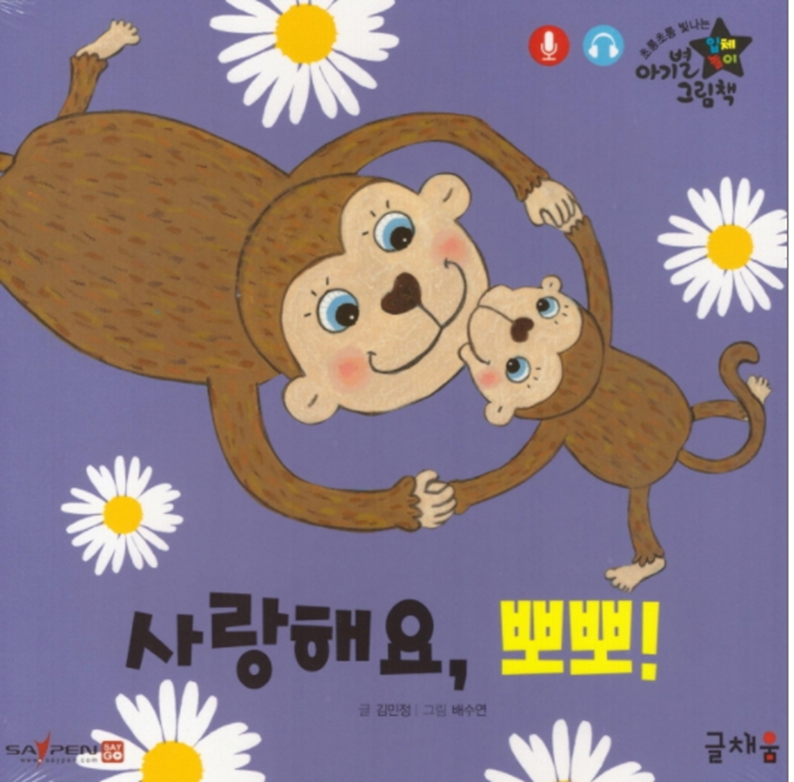
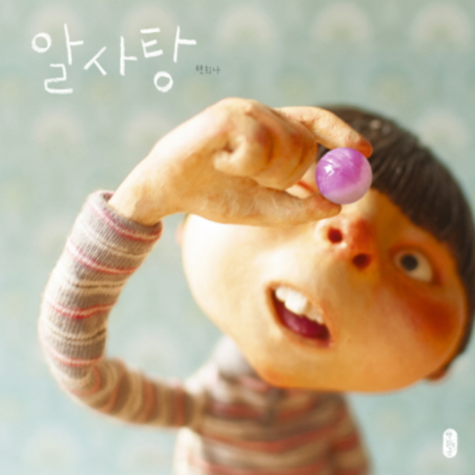
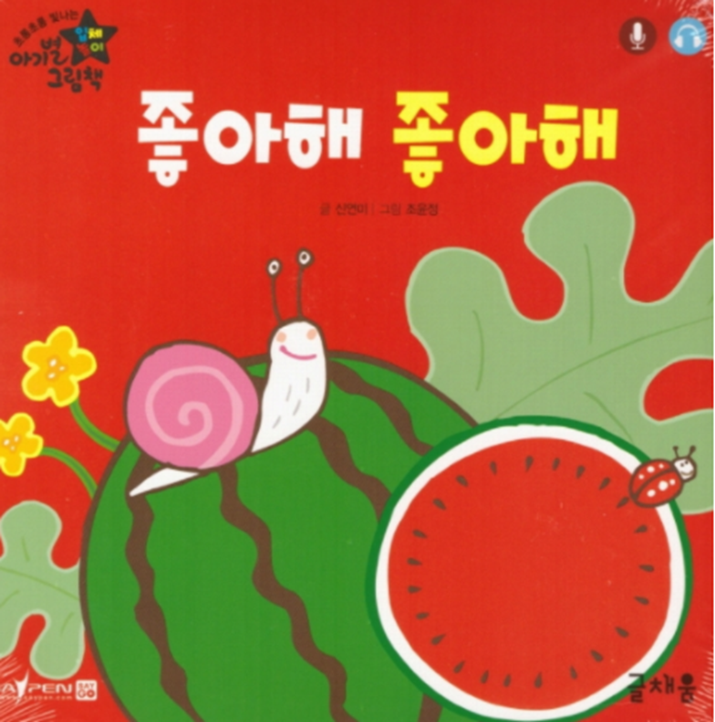
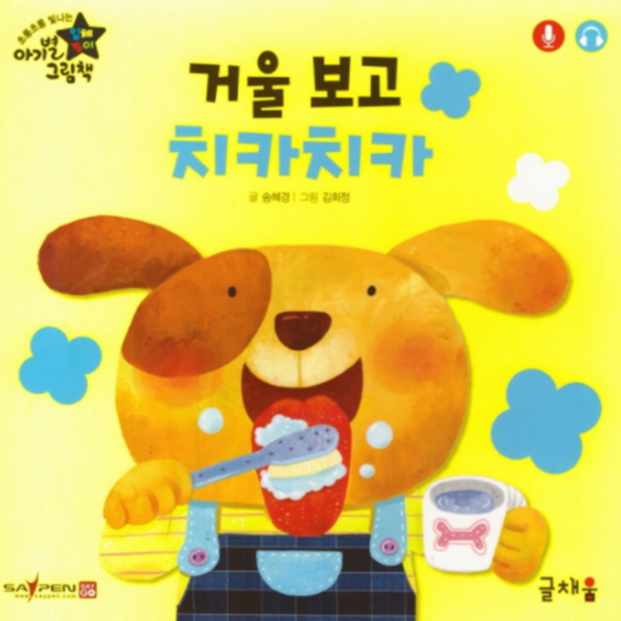

그림책의 의의
그림책(picture book)이란 글과 그림이 상호 보완적으로 의미를 전달하는 문학의 한 장르를 말한다. 문학적 경험을 통해 인간은 삶의 역사와 미래, 기쁨과 슬픔, 이름다움과 추함을 알 수 있도록 글(text)과 그림(illustration)으로 표현된 예술작품의 그림 이야기책(picture storybook)이다. 즉 그림이 지닌 색상, 톤, 점, 선, 인물들의 행동, 공간 묘사 등과 같은 요소와 문자 서사(敍事)가 유기적으로 어우러진 책이다. 광범위한 의미에서는 삽화가 그려진 책과 문자 서사가 전혀 없는 것도 포함한다. 그림책은 인간의 다양한 삶이 반영되어 간접 경험을 통해 풍부한 삶의 체험을 가능하게 한다. 그림책은 문학적 내용뿐만 아니라 문제 해결에 대한 양질의 정보를 제공할 수 있다.

아동을 위한 그림책
아동 도서, 즉 아동을 위한 그림책은 아동 혼자서 읽는 책이 아니라 성인이 읽어서 들려주는 소리를 들으면서 그림을 보고 내용을 이해하는 책이다. 이러한 그림책은 그림이 글과 동등하게 이야기를 표현하고, 때로는 그림만으로도 이야기 세계를 만들어내는 시각적 언어를 충분히 활용한 의사소통의 매체이다. 다시 말하면, 그림책은 성인이 읽어서 들려주는 이야기를 귀로 들어 언어의 소리부분에 의지하고, 그림을 보면서 언어의 이미지화에 의존하면서 언어의 세계에 들어가 인간 체험의 교류를 경험하게 하는 독특한 듣는 책이며, 그림을 보는 책이다.

글과 그림으로 결합된 문학작품
그림책은 다른 장르의 문학작품과는 달리 글과 그림이라는 두 매체가 서로 결합하여 의미를 전달한다. 이런 특성을 글과 그림의 행복한 결합이라고 비유하면서 그림과 글이 상호 의존해서 만드는 그림책은 문장, 그림, 편집, 제본의 4가지가 조화를 이루어야 한다(마쓰이 다다시, 1996). 등장인물의 동작과 동작하는 인물이 처한 공간과 시간의 관계는 그림을 통해 충분히 형상화될 수 있다는 점이 가장 중요한 특성이다.
일반적으로 그림은 즉각적으로 파악되는데 비해 글은 점차 내용이 드러난다는 특성이 있다. 보통 우리는 글을 읽기 전에 그림을 보는 경향이 있기 때문이다. 아동들의 세계는 현실이라는 일상으로부터 시작되지만 현실을 훨씬 넘어서는 놀이의 세계, 상념의 세계가 있다. 아동들은 현실과 상상의 이 두 세계를 자유롭게 넘나들 수 있을 때, 씩씩하고 튼튼하게 자랄 수 있다.

짧은 문장, 시각적 이미지
그림책은 시각적 이미지가 가장 강력한 감동을 나타나며, 이런 이유에서 아동이나 성인 역시 그림을 좋아한다. 그림책은 이해하고 감상하는 수준에 머무는 것이 아니라, 책 속에서 놀이의 세계, 상념의 세계로 직접 들어가 마음껏 상상의 나래를 펼 수 있는 특성을 지닌다. 그러나 그림책에 있는 짧은 문장은 비교적 빠르게 읽을 수 있지만， 단어와 연결되는 일련의 그림은 주의를 기울이고， 단서를 찾고， 흩어져 있는 정보를 맞추고， 기억하고， 예측하고， 구별하는 등의 활동을 포함하는 비교적 긴 과정을 거쳐야 한다.

그림책은 윤리적이고 교육적인 특성을 지닌다. 무엇보다도 그림책 내용을 이해할 수 있어야 하고 그러한 이해를 통하여 재미를 발견할 수 있어야 한다. 그림책에는 회화적 요소와 문학적 요소가 모두 중요하게 나타난다. 그림책은 그림과 글이 동시에 고려되어야 하는 매우 독특한 장르이기 때문에 책을 만들면서 공간 지각능력이 향상되고 계획부터 완성까지의 과정을 거치면서 침착함과 섬세함을 키울 수 있다.